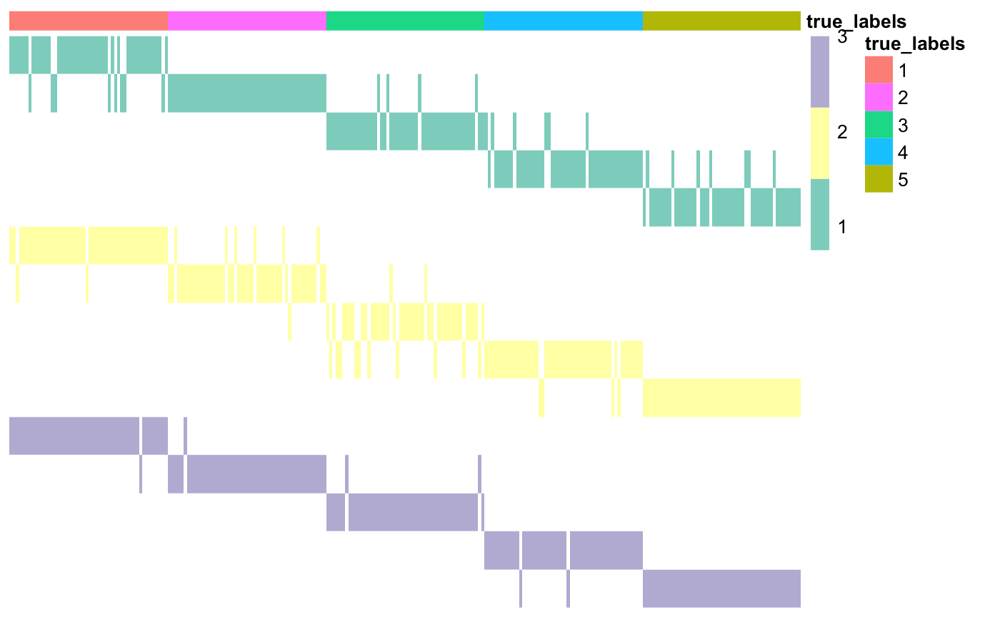
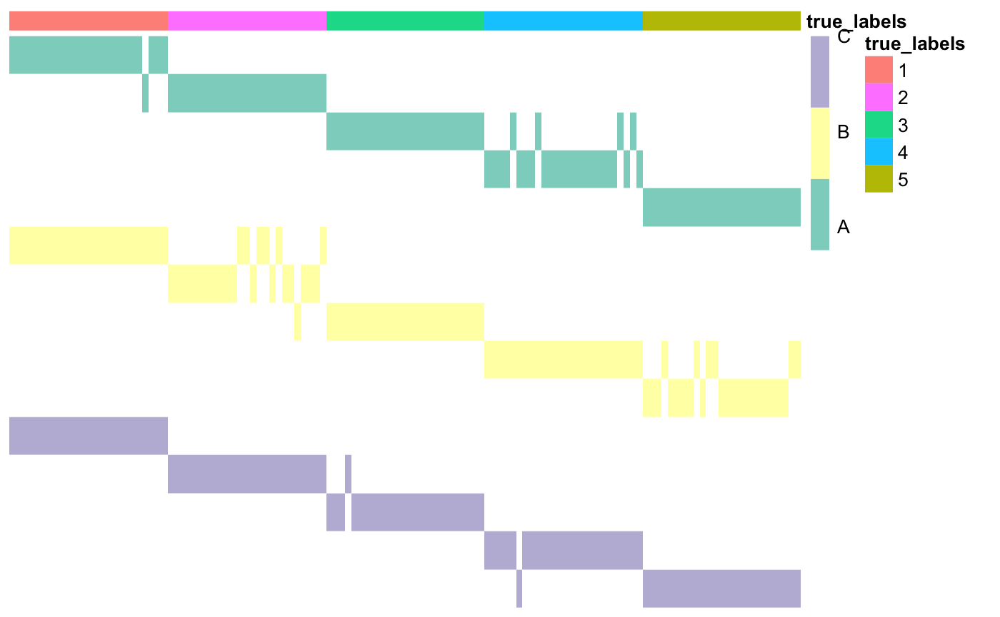
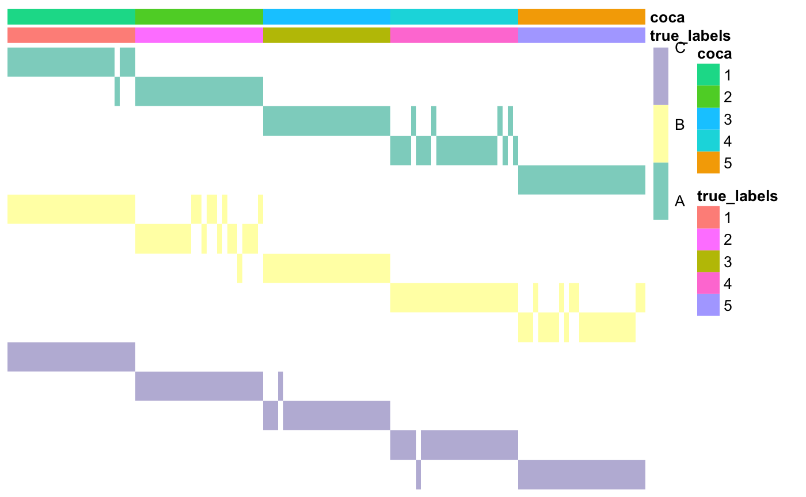
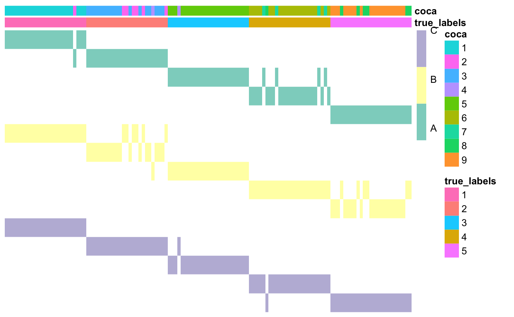

vignettes/coca-vignette.Rmd
coca-vignette.RmdThe R package coca contains the functions needed to use COCA (Cluster-Of-Clusters Analysis), an integrative clustering method that was first introduced in a breast cancer study by The Cancer Genome Atlas in 2012 and quickly became a popular tool in cancer studies (see e.g. Hoadley et al. 2014 and Aure et al. 2017). It is based on Consensus Clustering (Monti et al., 2013), an algorithm that was initially developed to assess the stability of clusters obtained with any clustering algorithm.
The main goal of COCA is to summarise clusterings found in different ’omics datasets, by identifying a “global” clustering across the datasets that is intended to be in good agreement with the clustering structures identified in each of the individual datasets. For further details about the algorithm, please see Cabassi and Kirk (2019).
The first step of COCA is the construction of the Matrix-Of-Clusters (MOC). This is a binary matrix of size N x K, where K is the sum of the number of clusters Km in every dataset Xm. Therefore, to each column j of this matrix corresponds a cluster mk in dataset Xm. The (i,j)-th entry of the matrix of clusters is equal to one if data point i belongs to cluster mk in dataset Xm, and is equal to zero otherwise.
The function that can be used to build a matrix of clusters starting from a list of heterogeneous datasets (referring to the same observations) is buildMOC. In the example below, we assume to have three datasets with the same number of clusters, five. The clustering structure in each of those datasets is found via k-means clustering.
### Load data data <- list() data[[1]] <- as.matrix(read.csv(system.file("extdata", "dataset1.csv", package = "coca"), row.names = 1)) data[[2]] <- as.matrix(read.csv(system.file("extdata", "dataset2.csv", package = "coca"), row.names = 1)) data[[3]] <- as.matrix(read.csv(system.file("extdata", "dataset3.csv", package = "coca"), row.names = 1)) ### Build matrix of clusters outputBuildMOC <- coca::buildMOC(data, M = 3, K = 5, distances = "cor") ### Extract matrix of clusters and dataset indicator vector moc <- outputBuildMOC$moc datasetIndicator <- outputBuildMOC$datasetIndicator
The package also contains a function that can be used to plot the resulting Matrix-Of-Clusters, plotMOC. Here we use as annotations the true cluster labels, but, in real applications, the annotations argument can take as input any dataframe with one element for each row of the matrix of clusters.
Please note that the row names of the dataframe must be the same must correspond to the observation names in each dataset, otherwise the annotation cells will be left empty by the plotting function. Moreover, each column of the dataframe that contains categorical variables must be defined with as.factor() if you want each category to have a different colour (otherwise they will be treated as continuous variables and each category will have a different shade of the same colour).
### Prepare annotations true_labels <- as.matrix(read.csv(system.file("extdata", "cluster_labels.csv", package = "coca"), row.names = 1)) annotations <- data.frame(true_labels = as.factor(true_labels)) ### Plot matrix of clusters coca::plotMOC(moc, datasetIndicator, annotations = annotations)

Here the datasets don’t have names, so they have been assigned integer numbers. If available, you can specify cluster names; this will make the row names easier to interpret.
### Prepare annotations true_labels <- as.matrix(read.csv(system.file("extdata", "cluster_labels.csv", package = "coca"), row.names = 1)) annotations <- data.frame(true_labels = as.factor(true_labels)) ### Set dataset names datasetNames <- c(rep("A", 5), rep("B", 5), rep("C", 5)) ### Plot matrix of clusters coca::plotMOC(moc, datasetIndicator, datasetNames = datasetNames, annotations = annotations)

As you can see, the first part of each row name corresponds to the dataset, the second one to the cluster index. Moreover, each colour in the main matrix corresponds to one dataset (here dataset A is green, dataset B is yellow, and so on).
The MOC matrix is then used as input to consensus clustering (CC), an algorithm that was developed by Monti et al. (2003) to assess cluster stability when analysing a single dataset. The resulting consensus matrix is then used as the similarity matrix for a hierarchical clustering method (or any other distance-based clustering algorithm). These last two steps of the COCA algorithm are contained in the coca() function.
### COCA # Use COCA to find global clustering coca <- coca::coca(moc, K = 5) # Compare clustering to the true labels ari <- mclust::adjustedRandIndex(true_labels, coca$clusterLabels) ari
## [1] 1### Plot the matrix of clusters with the newly found cluster labels annotations$coca <- as.factor(coca$clusterLabels) coca::plotMOC(moc, datasetIndicator, datasetNames = datasetNames, annotations = annotations)

Here, we have computed the Adjusted Rand Index (ARI) to check how similar the two partitions of the data are. The ARI goes from -1 to 1: values close to 1 indicate very high similarity between the two partitions, values close to 0 indicate that the observed amount of similarities between the two partitions is the expected similarity between two random partitions, while negative values indicate that the two partitions are less similar than what would be expected by chance.
Again, if the number of clusters is not know a priori, the user can delegate the choice of K to the coca() function. There are two methods available here: the silhouette, where the distance between data points i and j is defined as 1 minus the (i,j)-th kernel entry in the final kernel matrix, and the delta area under the curve, which is the method suggested by Monti et al. (2003). Please note that the properties of the latter have not been assessed yet.
# Use COCA to find global clustering and chooose the number of clusters coca <- coca::coca(moc, maxK = 10, hclustMethod = "average") # Compare clustering to the true labels ari <- mclust::adjustedRandIndex(true_labels, coca$clusterLabels) ari
## [1] 0.8117604### Plot the matrix of clusters with the newly found cluster labels annotations$coca <- as.factor(coca$clusterLabels) coca::plotMOC(moc, datasetIndicator, datasetNames = datasetNames, annotations = annotations)

Inside buildMOC()
In the first step, where a different clustering is found in each dataset, inside the buildMOC() function, the clustering algorithms available are:
method="kmeans"), for which the kmeans() function of the stats R package is used (see this link for the documentation);method="hclust"), for which the hclust() function of the stats R package is used (see this link for the documentation);method="pam"), for which the pam() function of the cluster R package is used (see this link for the documentation).If you would like to use a different clustering algorithm for each of your datasets, you can pass a vector of strings to the method argument. For example, by setting method = c("kmeans", "hclust", "pam") the clusters in the first dataset will be determined using k-means clustering, in the second one hierarchical clustering, and so on.
Inside coca()
To build the consensus clustering matrix, the default clustering algorithm is k-means, as implemented in the stats package. The default maximum number of iterations is 1000. If you would like to increase it, you can use the maxIterKM argument of the coca() function. Alternatively, one can select to use hierarchical clustering; this can be achieved by setting ccClMethod = "hclust". The distance used with hierarchical clustering can be selected via the ccDistHC argument of the coca() function.
To find the final clustering based on the consensus matrix, hierarchical clustering is used. The agglomeration method used in this step can be chosen via the hclustMethod of the coca() function. The available options are the same as in the hclust() function of the stats R package.
If you get one or more error messages saying did not converge in 1000 iterations when using the coca() function, it means that you are using the k-means clustering algorithm and that it did not converge within the maximum number of iterations (the default is 1000). If you would like to change the maximum number of iterations or use a different clustering algorithm, please see the previous section.
Aure, M.R., Vitelli, V., Jernström, S., Kumar, S., Krohn, M., Due, E.U., Haukaas, T.H., Leivonen, S.K., Vollan, H.K.M., Lüders, T. and Rødland, E. (2017). Integrative clustering reveals a novel split in the luminal A subtype of breast cancer with impact on outcome. Breast Cancer Research, 19(1), p.44.
Cabassi, A. and Kirk, P. D. W. (2020). Multiple kernel learning for integrative consensus clustering of ’omic datasets. Bioinformatics, btaa593.
Hoadley, K.A., Yau, C., Wolf, D.M., Cherniack, A.D., Tamborero, D., Ng, S., Leiserson, M.D., Niu, B., McLellan, M.D., Uzunangelov, V. and Zhang, J., 2014. Multiplatform analysis of 12 cancer types reveals molecular classification within and across tissues of origin. Cell, 158(4), pp.929-944.
Monti, S. et al. (2003). Consensus Clustering: A Resampling-Based Method for Class Discovery and Visualization of Gene. Machine Learning, 52(i), 91–118.
The Cancer Genome Atlas (2012). Comprehensive molecular portraits of human breast tumours. Nature, 487(7407), 61–70.